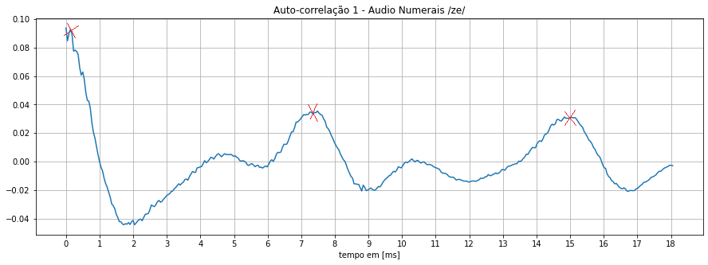

Análises de processamento digital de sinais em espectros de voz. Utilizamos o software Audacity para a captura de voz em todos o experimento realizado. Abaixo segue os audios capturados solicitados no roteiro do laboratorio. Vale ressaltar que este laboratorio será executado somente pelo integrante do grupo André Nunes.
-Numerais de 0 a 9:
-Leitura dos digitais do RA:
-Realizamos a leitura de um trecho do texto de explicação do curso Bc&T na UFABC. "No curso Bacharelado em Ciência e Tecnologia os estudantes têm a oportunidade de trabalhar e desenvolver temas interdisciplinares, por meio de uma metodologia que incentiva a postura investigativa, estimula a pesquisa e consequente produção científica, o que propicia os meios necessários para desencadear o processo de aprendizagem contínua no decorrer da sua futura vida acadêmica e profissional."
-Declamamos em forma de poesia um trecho da musica "Pra voce Guardei o amor" do musico e compositor Nando Reis
Os arquivos gravados foram importados como vetores utilizando a biblioteca Librosa e apresentamos a seguir os plots dos sinais de áudio no tempo para cada uma das gravações.
Podemos reparar os formatos de faixas diferentes entre os audios e obter algumas conclusões. Por exemplo, os audios de numerais e numero do RA, vemos intervalos nas faixas onde a captura de audio (ou ruido) onde não há captura de som, isso ocorre pelo modo devagar e pausado gravado nos audios, onde existe um intervalo entre cada numeral falado. Por outro lado, nos audios de texto e poesia, temos uma fala mais continua com intervalos menores, e com isso conseguimos reparar tempos menores de baixa frequencia nas faixas, uma vez que se possui menores intervalos durante a leitura.
Abaixo segue a figura plotada da Janela da Hamming solicitada.
Seguimos o laboratorio trazendo as informações de energia de tempo curto da voz, abaixo segue a platagem referente a cada um dos audios.
Devido ao fato de executar este laboratorio sozinho, não é possivel realizar a comparação de comportamento com outra pessoa. Porém é possivel notar o padrão de energia na minha voz, batendo no maximo 60db. Também é notavel o fato que em nenhum momento a energia se encontra no eixo de 0db, podendo associar isso a possivel ruido do microfone.
Seguimos o laboratorio trazendo as informações de Espectogramas dos audios, abaixo segue referente a cada um dos audios.
Podemos notar nos espectrograma os momentos de silencio, onde existe uma pausa na voz, este momento acontece principalmente nos audios de numerais e de RA, uma vez que o metodo de fala neste audios possuem intervalos definidos. No audio de texto, vemos o poucos intervalos de pausa e de silencia, uma vez que o texto apresenta uma fala mais continua e de pouco intervalo. O audio de poesia mescla um pouco do comportamento dos anteriores, apresentando poucos intervalos durante a leitura e um momento de silencio durante as trocas de estrofes.
Nesta proxima etapa foi obtido o período de pitch dos sinais por meio da análise entre os picos sucessivos da função de autocorrelação dos sinais. Na primeira imagem utilizamos o fonema "ze" do inicio do numero zero. Na segunda imagem utilizando o fonema "ba" do inicio do da palavra "bacharelado" contida no audio texto e na terceira imagem temos o fonema "am" da palavra "amor" contida no audio poesia.

Realizamos o procedimento para encontrar os espectros das vogais acima, marcando nas imagens as formantes de f1 a f4.
Para finalizar o laboratorio, marcamos no espectrograma do audio de digitos lugares onde se encontram /m/ /s/ e /t/. Segue abaixo a imagem.
Atraves deste experimento, foi possível reforçar alguns conceitos teóricos associados ao processamento digital de sinais de áudio. Foi possível identificar um conjunto de fatores que pode influenciar na gravação e qualidade dos audios capturados, tais como velocidade, entonação e respiração. Foi possível verificar sutis diferenças nas formas de onda dos sinais ao longo do tempo. Infelizmente devido a execução do laboratorio somente por um dos integrantes, não foi possivel realizar a comparação de energia da voz e espectrograma, faltando assim conclusões referentes a essas comparações.